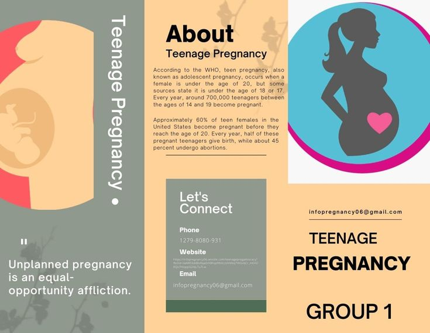

FOLLOW US:
facebook
twitter
pinterest
instagram
Adolescent pregnancies are a global problem occurring in high-, middle-, and low-income countries.
Around the world, however, adolescent pregnancies are more likely to occur in marginalized communities,commonly driven by poverty and lack of education and employment opportunities. Several factors contribute to adolescent pregnancies and births. In many societies, girls are under pressure to marry and bear children early.
In least developed countries, at least 39% of girls marry before they are 18 years of age and 12% before the age of 15.In many places girls choose to become pregnant because they have limited educational and employment prospects. Often, in such societies, motherhood is valued and marriage or union and childbearing may be the best of the limited options available. Adolescents who
may want to avoid pregnancies may not be able to do so due to knowledge gaps and misconceptions on where to obtain contraceptive methods and how to use them.
Adolescents face barriers to accessing contraception including restrictive laws and policies regarding provision of contraceptive based on age or marital status, health worker bias and/or
lack of willingness to acknowledge adolescents’ sexual health needs, and adolescents’ own inability to access contraceptives because of knowledge, transportation, and financial constraints.
Additionally, adolescents may lack the agency or autonomy to ensure the correct and consistent use of a contraceptive method. At least 10 million unintended pregnancies occur each year among adolescent girls
aged 15-19 years in developing regions. An additional cause of unintended pregnancy is sexual violence, which is widespread with more than a third of girls in some countries reporting that their first sexual encounter was coerced.

ON THIS PAGE...
WHAT CAUSES TEENAGE PREGNANCY?
- Lack of information about sexual and reproductive health and rights.
- Inadequate access to services tailored to young people.
- Family, community and social pressure to marry.
- Sexual violence.
- Child, early and forced marriage, which can be both a cause and a consequence.
- Lack of education or dropping out of school.
WHAT ARE THE EFFECTS OF TEENAGE PREGNANCY?
HOW DOES TEENAGE PREGNANCY AFFECT GIRLS?
Adolescents pregnancy remains a major contributer to material and child morality.
Complications relating to pregnancy and childbirth are the leading cause of death for girls aged 15-19 globally.
Preganant girls and adolescents also face other health risks and complications due to their immature bodies. Babies born to younger mother are also at greater risk.
For many adolescents, pregnancy and childbirth are neither planned, nor wanted.
In countries where abortion is prohibited or highly restricted, adolescents typically resort to unsafe abortion, putting their health and lives at risk.
Some 3.9 million unsafe abortions occur each year to girls aged 15-19 in developing regions.
Adolescent pregnancy can also have negative social and economic effects on girls, their families and communities.
Unmarried pregnant adolescents may face stigma or rejection by parents and peers as well as threats of violence.
Girls who become pregnant before age 18 are also more likely to experience violence within a marriage or partnership.
Teenage pregnancy in globally is a multifaceted problem with many contributing factors such as poverty, gender inequalities, gender-based violence,
substance use, poor access to contraceptives and issues with termination of pregnancy; low, inconsistent and incorrect
use of contraceptives, limited number of healthcare.
WHAT CAN WE DO TO PREVENT TEENAGE PREGNANCY?
There are many different ways to prevent a teenage girl from becoming pregnant, the only one that is absolutely effective is sexual abstinence.
This method is the only one that guarantees no risk of getting pregnant and protects the teen from getting any STD's.
For many years abstinence has been viewed as a decision based upon a religious or moral belief.
In the article "Promotion of Sexual Abstinence: Reducing Adolescent Sexual Activity and Pregnancies," Hani R. Khouzam says,
"Sexual abstinence is not associated with public health risks and needs to be presented and promoted as the most effective primary prevention for unplanned pregnancies"
it becomes evident that abstinence courses in schools are a sure way to get teens to realize the responsibility that comes with becoming sexually active, and to get them thinking about choosing to remain abstinent.
The more information teenagers are given on the subject, the higher the chances that they will make this decision.
For this reason, it is important that teenagers be taught the health benefits of choosing to remain abstinent.
Another form of teenage pregnancy prevention that is being taught in schools is various contraceptive techniques.
Although abstinence remains the best way to prevent pregnancy among teens,it is a fact that there are still a large number of them who will be involved in sexual relations.
For this reason, it is important that teens be provided with broad information on how to do so responsibly using various contraceptive techniques.
The problem that rises from this is that teenagers are not being exposed to extensive information on the various forms of birth control, condoms, and other methods of prevention that are available.
For most teenagers, the real consequences of having a child at such a young age are unknown.
Teens need to be aware of the harsh reality of raising a baby and the negative effects that an unplanned pregnancy can cause in both the mother and the child's lives.
NO TO ABORTIONS!
Abortion is the deliberate termination of a human pregnancy that is often performed during the first 28 weeks of pregnancy. As life begins at conception, unborn babies are human beings and thus have the right to life.
The federal Unborn Victim Of Violence Act that was made to protect unborn babies from murder states that anybody intentionally killing an unborn baby should be punished for killing a human being.
Abortion is a murder because it is taking away someone’s life.
Even though the baby isn’t born yet, the fetus in the mother’s womb still feels pain while being aborted.
No person, not even a mother, has the right to hurt someone.
To keep a child, who can’t even speak, from growing and from living is a murder.
Abortion is tremendously unethical, just like murder is highly immoral.
Many religions oppose the idea of abortion; Christianity considers abortion to be a sin under all circumstances; Hinduism considers abortion to be a form of violence.
In addition, when the woman decides to have a sexual intercourse with a man without any proper use of contraception, she knows that pregnancy will result.
If the mother did not want the baby in the first place or if she could not take on the responsibility of the baby, then she should not get pregnant just to later on kill the unborn innocent child in her womb
ANOTHER RECOMMENDED SOLUTIONS
Suggestions for improving the situation included:
- developing a community based approach which utilizes school sex education integrated with
parent, church, and community groups,
- increasing teenage knowledge of contraception, and
- providing counseling and medical and psychological health, education, and nutrition globally.
K E Y P O I N T S
Found this helpful:
- If your teenage child is expecting a baby, you can play a big role in supporting a healthy teenage pregnancy.
- Pregnant women under 19 years need extra care in pregnancy and during parenting.
- Try to look for services and support that are experienced in caring for pregnant teenagers and their partners.
Your teenage child’s feelings about pregnancy
Your child is probably going through some intense and mixed feelings about the pregnancy and becoming a parent.
If the pregnancy is planned, your child might be looking forward to parenthood.
But if the pregnancy isn’t planned, your child might be worried about telling you and finding out how you feel.
There’s also the worry about what extended family and other people will think – now and after the baby is born.
Young people who become parents often experience judgmental attitudes from peers at school and other people in their lives.
If your child knows he or she can come to you for support, it might help with coping.
Your child might not know what kind of support will help during pregnancy.
By saying something like ‘What can we do together to help you right now?’
, you’re helping your child to think and talk about the support she or he needs.
Encouraging your child to get support through the school’s wellbeing team is also a good idea.
- Support and privacy: finding a balance
- Legally, you might still be responsible for your daughter – but your daughter is going to be a parent.
- When your daughter talks privately with health professionals, it’s good practice for when she’s responsible for her baby’s health as well as her own.
Also, it might be a good idea if you, your daughter and your daughter’s partner can have an early conversation about how involved
they want you and his parents to be in antenatal care and birth. This can help you understand their needs and boundaries.
Healthy eating, exercise and lifestyle for teenage pregnancy.
If your teenage daughter is pregnant, the health professionals involved in her antenatal care will talk with her about keeping healthy, managing stress, and stopping risky activities.
It might be tempting to tell your daughter what to do or what not to do.
But a good way to support her is by letting her know that you think she can make good decisions about her health and her baby’s health too.
If your daughter is worried about anything or doesn’t know what to do, you can suggest she talks to the health professionals caring for her.
HEALTHY EATING
Healthy eating is especially important during pregnancy and breastfeeding. If your daughter is pregnant, she needs good food to support her baby’s health and growth as well as her own.
She also needs to avoid some foods and drinks.
If your daughter isn’t used to preparing her own meals or eating good food away from home, you can share some of your favourite healthy recipes.
You could plan meals and go shopping together, which can also help her with budgeting. You might even be able to spend some time together cooking.
Some community programs for young mums also focus on healthy eating and run cooking classes.
If your daughter is significantly overweight or has a history of eating disorders, her health professionals might refer her to a dietitian.
DIETING
Your daughter might be uncomfortable with the way her body looks and feels while she’s pregnant.
But pregnancy is not the time to try to lose weight through dieting or intense exercise.
This can be harmful for the baby.
YOUR DAUGHTER SHOULD AVOID:
- skipping meals.
- taking diet or weight-loss supplements.
- taking nutritional supplements claiming to be healthy for weight loss.
- taking natural remedies claiming to be healthy for weight loss.
- starting an intense exercise regimen.
You can encourage your daughter to talk with her doctor or midwife about her changing body.
STAYING ACTIVE
Staying active can improve mood, fitness and sleep,boost energy and ease back pain.
Along with healthy eating, physical activity during pregnancy might also reduce weight gain and diabetes.
And it can help your daughter cope better during birth.
It’s good if your pregnant daughter checks with her midwife or doctor early in pregnancy about how much physical activity she should do.
If your son is expecting a baby, you can encourage him to go for regular walks with his pregnant partner as a way of supporting their physical fitness together.
CUTTING OUT SMOKING, ALCOHOL AND OTHER DRUGS
Most things that your pregnant daughter eats and drinks in pregnancy will pass through to her placenta and then to her baby.
Your daughter needs to stop smoking, drinking alcohol and taking non-prescribed drugs like marijuana, speed, ice, heroin and cocaine.
These substances are all bad for your daughter’s health and her baby’s growth and development.
Your daughter should check with her doctor or midwife that any medicines she’s taking are safe for pregnancy.
This includes prescribed medicines, herbal medicines, natural supplements and medicines from chemists and supermarkets.
TEENAGE PREGNANCY: Helping your teen cope
Teenage pregnancy can have a profound impact on a teen's life.
Help your child understand the options, health risks and challenges ahead.
Pregnancy can be one of the most difficult experiences a teenager faces. Understand how to help your teen address the challenges ahead.
Provide support.
Teenage pregnancy can be a crisis for your teen and your family. Common reactions might include anger, guilt and denial.
Your teen might also experience anxiety, fear, shock and depression. Ask what your teen is feeling and talk about what's ahead. Your teen needs your love,
guidance and support now more than ever.